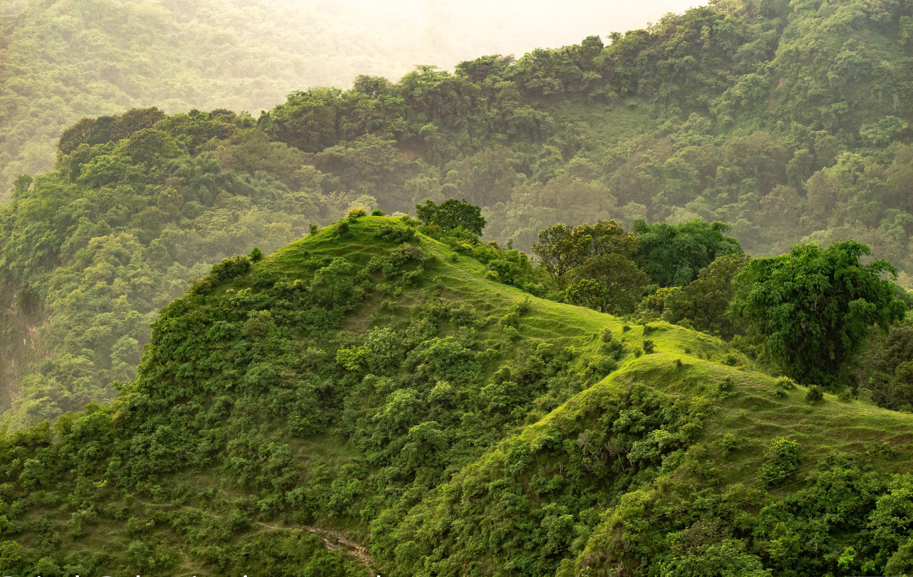
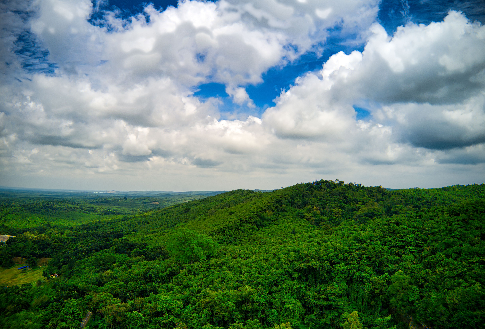
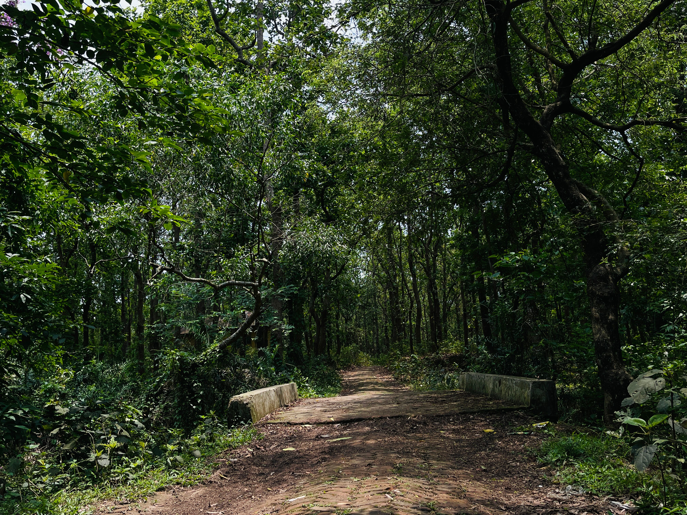
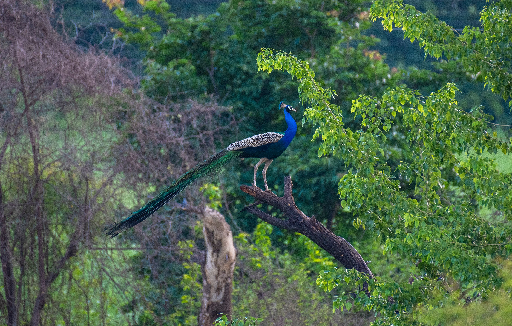
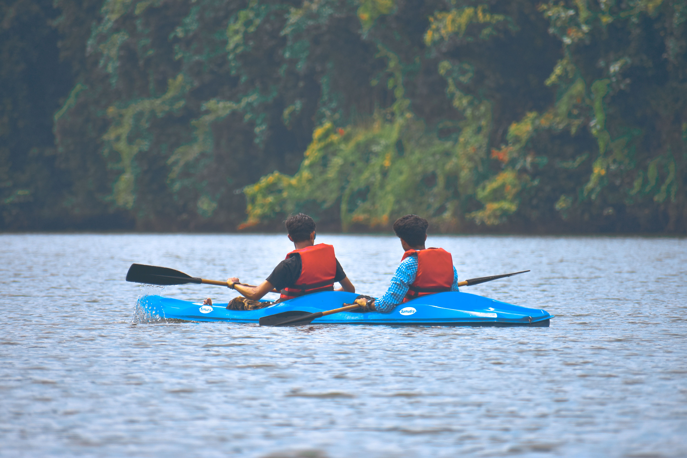
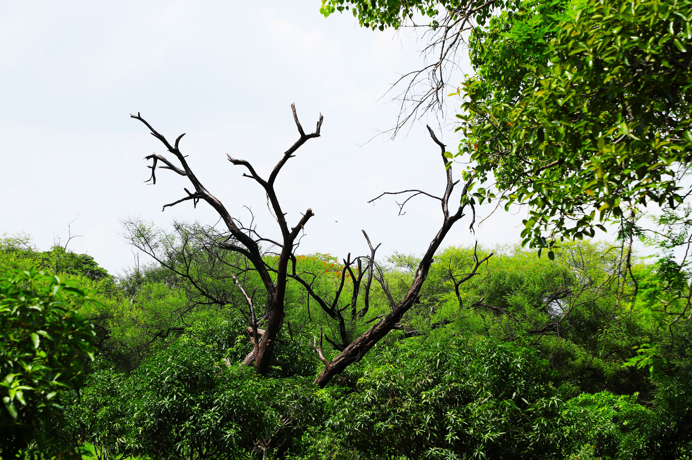
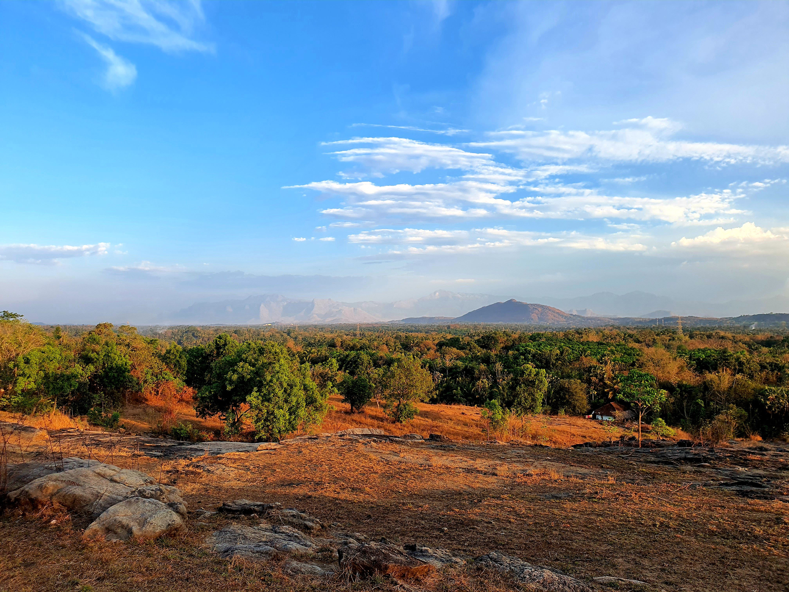
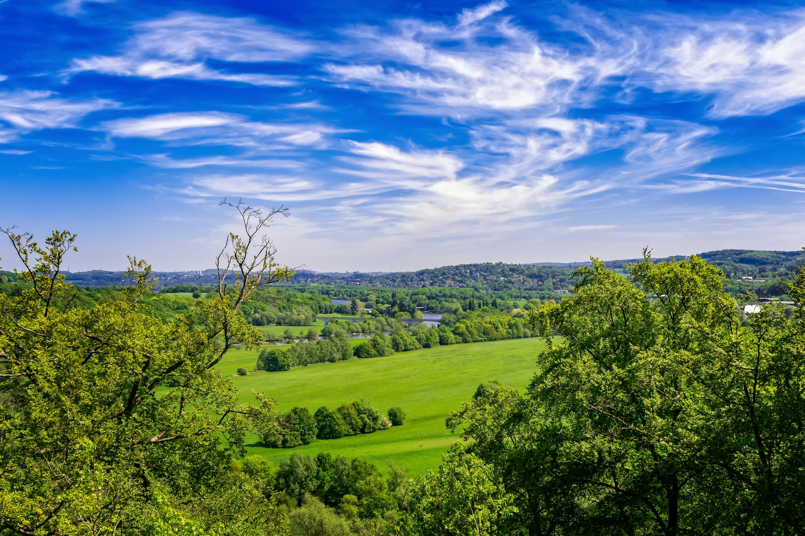
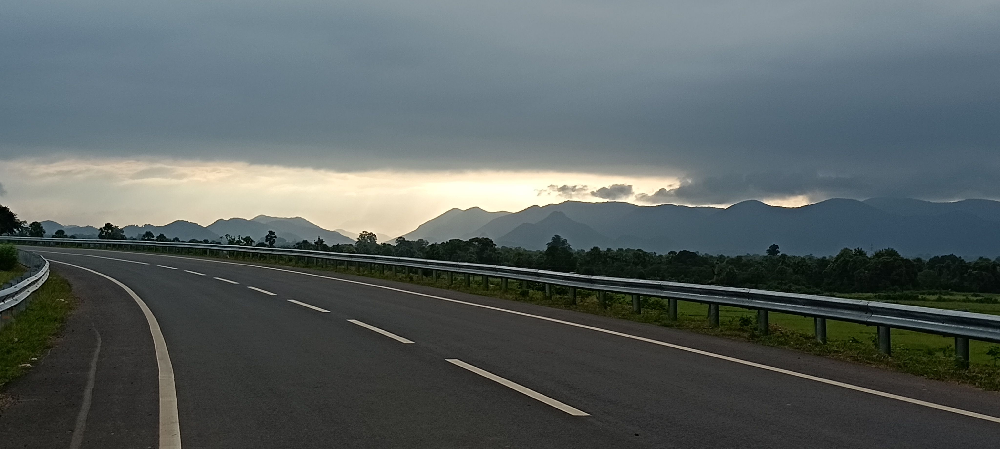

The Reset Ride
Your out-of-office starts where the forest begins.
discover this experience

Just two hours from Hyderabad lies a forest that asks nothing of you except your time. Over two days, we cycle through shaded roads, quiet villages, the birthplace of the Musi River, and the peaceful landscapes of Ananthagiri Hills.
View Journey Details
2D / 1N
Any
Easy
Ananthagiri Hills
Ananthagiri Hills
Open for Booking
Rs. 12,000
Cycling
18+
Cycle / Electric Cycle
Private Room

Over two days, we explore the forests, quiet roads, and hidden landscapes of Ananthagiri Hills by cycle. From peaceful village trails and ancient temples to the calm waters of Kotepally Reservoir, every ride offers a chance to slow down, reconnect with nature, and return feeling refreshed.
We meet in Ananthagiri Hills in the afternoon, where your cycles are ready and waiting. After a short introduction, we set off on a relaxed sunset ride through quiet forest roads and tree-lined trails, leaving behind the rhythm of the city with every pedal stroke. Along the way, we visit the historic Anantha Padmanabha Swamy Temple before returning to our stay. As evening settles in, we gather around a campfire, enjoy a wholesome dinner together, and unwind beneath a sky filled with stars.
Distance: 20 – 25 km
As the forest slowly comes to life, we begin the day with an early morning ride through the cool, peaceful landscapes of Ananthagiri. The fresh air, birdsong, and quiet roads create the perfect start to the day before we continue cycling towards Kotepally Reservoir through winding forest trails. After spending time by the water and enjoying the calm surroundings, we return to our stay for breakfast, carrying home a sense of renewal that lingers long after the ride ends.
Distance: 25 – 30 km






The Event Terms and Conditions detailed below apply to all participants of 'The Reset Ride' as well as attendees or participants (herein after called "Participant") participating in any of Cycle Culture's ("organizer", "we", "us", "our") cycling events.
By registering for this event, you agree to abide by all terms and conditions set forth below.
Participants must complete the registration process and pay the full event fee to secure their spot.
All participants must be at least 18 years of age at the time of the event.
The organizer reserves the right to refuse entry to any participant who does not meet the requirements or fails to provide necessary documentation.
Participants will be provided with cycles (standard or electric) and basic safety gear including helmets.
Helmets are mandatory for all participants during cycling activities. Participants are encouraged to bring personal cycling gloves and attire for comfort.
The organizer is not responsible for any damage to personal equipment during the event.
Participants should be comfortable with easy to moderate cycling (20–30 km per day) on forest and village trails.
Participants with pre-existing medical conditions must consult their physician before participating and inform the event organizers.
The organizer reserves the right to remove any participant from activities if they appear to be physically unable to continue or pose a risk to themselves or others.
We follow "Leave No Trace" principles – please carry back any waste and respect the natural environment.
Participants must stay on designated trails and respect the local flora and fauna.
Cancellations made more than 10 days prior to the event will receive a full refund.
Cancellations made 0–10 days prior will not receive any refund.
The organizer reserves the right to cancel the event due to unforeseen circumstances (extreme weather, road closures, etc.). In such cases, participants will receive a full refund or option to reschedule.
A little rain is part of the adventure. Our rides and experiences continue in light to moderate rain with suitable rain gear. In cases of extreme weather where safety may be affected, the trip may be postponed or cancelled at our discretion.
By participating, each participant acknowledges the inherent risks associated with cycling and outdoor activities and agrees to participate at their own risk. Cycle Culture and its guides shall not be held liable for any injury, loss, damage, or expense arising from participation in the experience.
Participants are responsible for any significant damage to cycles, equipment, or property during the experience. Normal wear and tear and minor repairs are excluded. Repair or replacement costs arising from such damage may be charged to the participant.
A detailed liability waiver must be signed before the start of the tour.